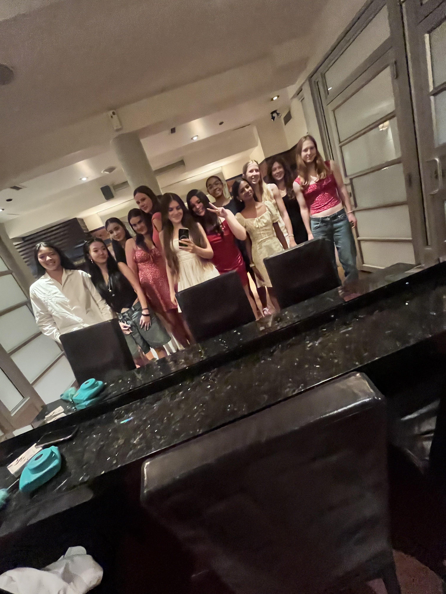
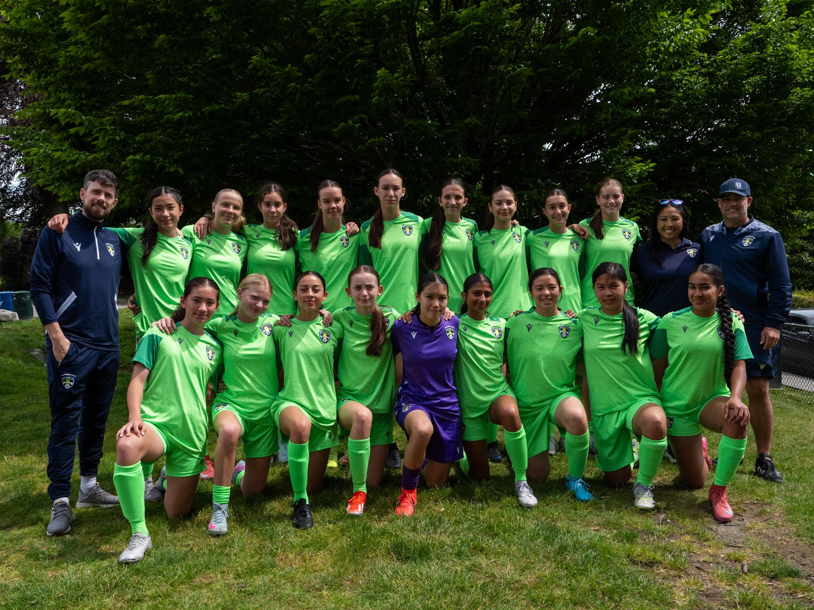
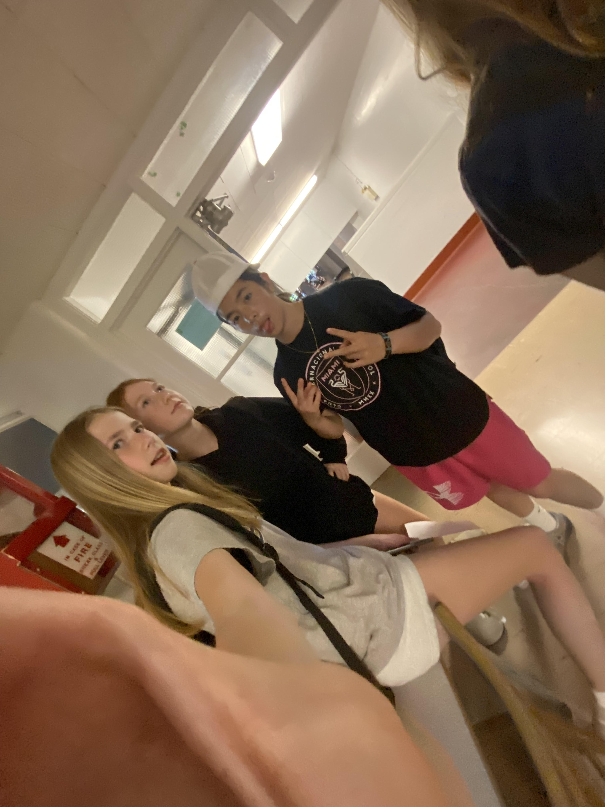

June 7th - UBC Camp and Birthday Parties
In the morning I went out to UBC to go to my coding camp. We learned about Java script and there was a presentation but I had to miss it because I had other events to attend.
At around 1pm I walked from camp to Uhill secondary school and helped my friend Sherisa set up her party. I also met some of her of her friends and we played soccer on the turf, had a water gun fight at the water park beside the community center and ate some food.
After about an hour and a half I had to leave so I could go home and get ready for another birthday party. I was sad to leave Sherisa's party but I had already accepted my school friends invitation weeks before.
For my friend Maddy's party, we went to cactus club. A bunch of my other school friends were also invited so everyone was hanging out with each other and we had so much fun, that I didn't want that day to end!

June 8th - Qualifing Provincial Game
We had our first game of provincials, which was qualifiers because we came second in the province for our age group so we got a BYE weekend for the PLAY IN round.

June 7th - UBC Camp and Birthday Parties
In the morning I went out to UBC to go to my camp about coding. We learned about Java script and there was a presentation but I had to miss it.
The reason I missed it was because I had to go to my friends birthday party at Uhill turf, on the way there I had to make a quick stop at Ken Woods for something soccer related.
Then I walked down to Uhill and helped my friend set up her party. I also met some of her out of soccer friends and we played soccer, had a water gun fight and ate some food.
After about an hour and a half I had to leave so I could go home and get ready for another birthday party. I was sad to leave her party but I had already
June 7th - UBC Camp and Birthday Parties
In the morning I went out to UBC to go to my camp about coding. We learned about Java script and there was a presentation but I had to miss it.
The reason I missed it was because I had to go to my friends birthday party at Uhill turf. So I walked down to Uhill and helped my friend set up her party. I also met some of her out of soccer friends and we played soccer, had a water gun fight and ate some food.
After about an hour and a half I had to leave so I could go home and get ready for another birthday party. I was sad to leave her party but I had already
June 7th - UBC Camp and Birthday Parties
In the morning I went out to UBC to go to my camp about coding. We learned about Java script and there was a presentation but I had to miss it.
The reason I missed it was because I had to go to my friends birthday party at Uhill turf, on the way there I had to make a quick stop at Ken Woods for something soccer related.
Then I walked down to Uhill and helped my friend set up her party. I also met some of her out of soccer friends and we played soccer, had a water gun fight and ate some food.
After about an hour and a half I had to leave so I could go home and get ready for another birthday party. I was sad to leave her party but I had already